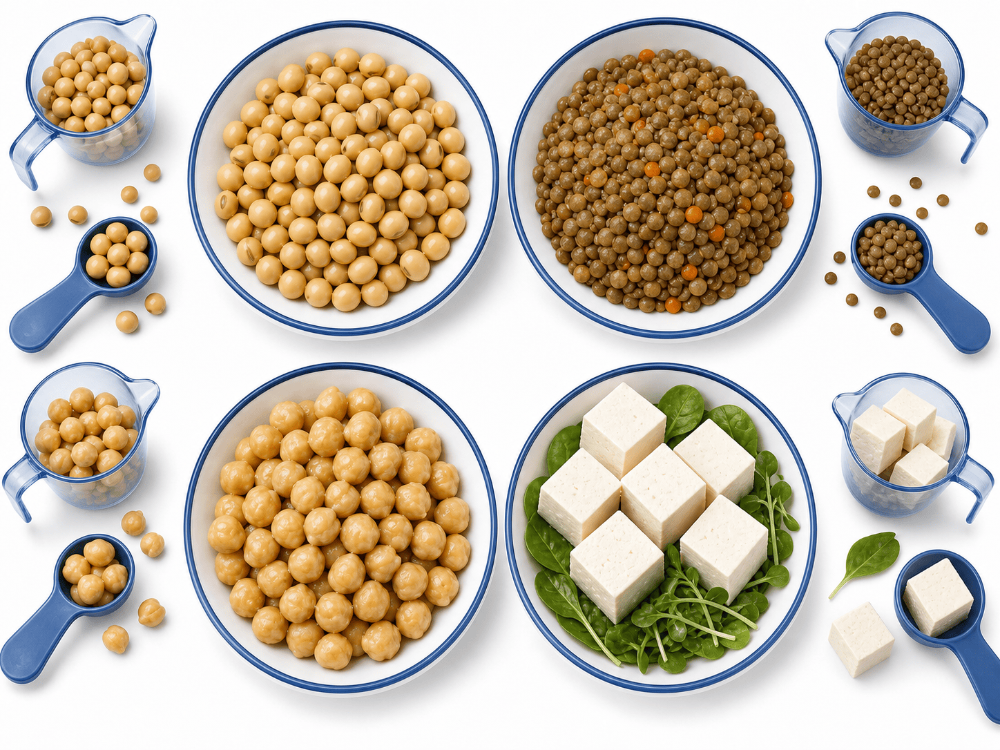
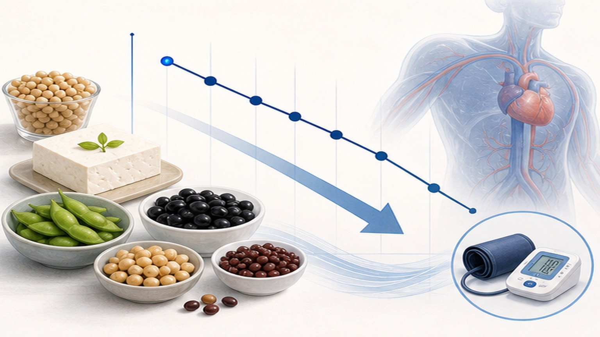
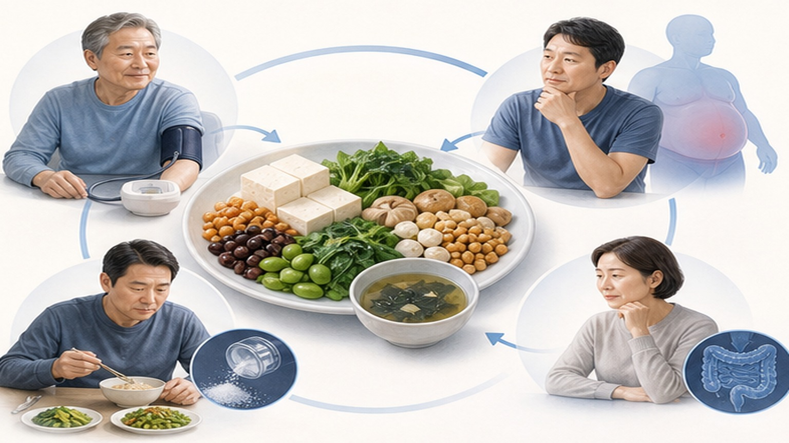
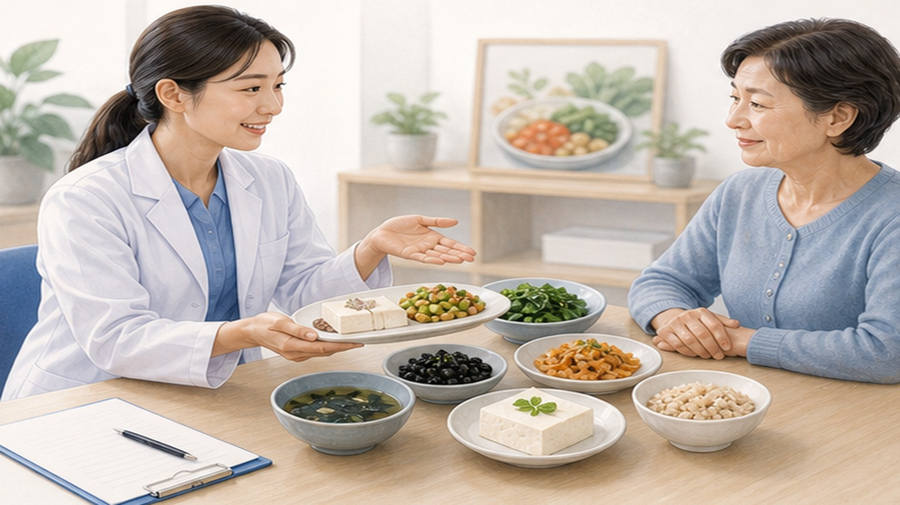

콩과 두류,
고혈압 예방의 정량적 처방
BMJ Nutrition, Prevention & Health 2026.05 — 식이 콩(soy)·두류(legumes) 섭취 최적량 정량화. DASH·지중해식 권고 보강 + 약물 시작 전 1차 식이 개입.
한 문단·세 숫자로 요약
콩·두류 섭취가 많을수록 고혈압 발생 위험 감소 — 최적 섭취량 정량화로 구체적 처방 가능
(렌틸·병아리콩·강낭콩 등)
(메주콩·두부·두유)
(저섭취 대비 메타분석)
한 끼 섭취 시각화 — 4가지 콩·두류
대두·렌틸·병아리콩·두부 — 환자에게 보여줄 정확한 한 끼 분량

한국 환자 실무 처방
- 매끼 잡곡밥에 콩 추가 — 쌀의 20-30% 대신 검정콩·팥·완두콩
- 두부 1/3모/일 — 찌개·구이·샐러드 어떤 형태든
- 두유 200 mL/일 — 무가당·무첨가 우선 (당류 <5g/100mL)
- 주 3회 이상 콩요리 — 콩나물국·청국장·낫토·후무스
- 샐러드·수프에 렌틸/병아리콩 — 한 끼 한 컵 분량
메타분석 — Dose-response 모델로 최적량 도출
다수 cohort 통합 + 식이 빈도 설문 + 고혈압 발생률 추적. 정량 권고 가능 수준 분석.
섭취량-효과 관계 — 4구간 정량화
두류 0–170g/일 범위에서 dose-response 음의 관계. 170g/일 이상 추가 이득은 미미.

기전 — 무엇이 혈압을 낮추는가
단일 성분이 아닌 다중 영양소 패키지 효과 — 칼륨·마그네슘·이소플라본·식이섬유·식물성 단백질
5가지 핵심 기전
- 고칼륨 — Na 배설 ↑ · RAAS 억제. 콩 100g당 K 500-700mg
- 마그네슘 — 혈관 평활근 이완 + 혈관 내피 NO 신호. 콩 100g당 Mg 60-80mg
- 이소플라본 (대두) — Estrogen receptor agonist · 혈관 내피 기능 개선 · NO 생성 ↑
- 식이섬유 — 장내 미생물·SCFA 생성 · 인슐린 저항성 개선 · 체중 감소 매개
- 식물성 단백질 — 동물성 단백 대체 시 LDL ↓, 포화지방 ↓, 혈관 보호
식이 개입 효과가 큰 4가지 환자군
전고혈압 약물 시작 전, 비만·당뇨 동반, 노인, 약 부작용 호소 — 모두 식이 1순위
📊 전고혈압 (SBP 120–129)
약물 시작 전 단계. 식이 + 운동 3–6개월 후 재평가가 가이드라인. 콩·두류로 진행 차단·역전 가능. 환자 동기 부여 핵심.
⚖️ 비만·대사증후군
콩·두류 섭취 → 체중 감소 + 인슐린 저항성 개선. 식물성 단백질로 동물성 대체 시 LDL·요산도 동시 감소.
👴 노인 식이섬유 부족
한국 노인 평균 식이섬유 권고량의 60% 미달. 콩·두류로 변비·장 건강·혈압 동시 개선. 부담 없는 1차 개입.
💊 약물 + 식이 병행
이미 약 복용 중인 고혈압 환자에서도 식이 추가로 SBP −2~4 mmHg 추가. 약 용량 감량·약물 갯수 줄이기 가능.

안전성 — 거의 모든 환자에서 안전
신부전 G4-5, 콩 알레르기, 갑상선약 복용자만 주의. 일반인은 상한 없음.
환자 상담 우선 대상 + 한국 맥락
전고혈압·1단계 고혈압·대사증후군 — 모두 식이 1차 권고 대상. KSH 가이드라인 활용.
🎯 식이 권고 1순위
- 전고혈압 (SBP 120–129) — 약물 시작 전 3–6개월 식이 + 운동
- 1단계 고혈압 + 저위험 — KSH 6–12개월 식이 우선 (vs AHA 3–6개월)
- 대사증후군 — 복부비만·이상지질혈증·당뇨 위험군 동시 개선
- 비만 (BMI ≥25) — 식물성 단백 대체로 체중·혈압 동시 감량
- 심혈관 위험군 — ASCVD 1차 예방 식이 패키지 (DASH·지중해식·콩)
📝 상담 시 핵심 메시지
- "하루 한 끼 콩요리 한 그릇" — 구체적 행동 처방
- "잡곡밥에 검정콩·팥 섞기" — 가장 쉬운 첫 단계
- "두유 200 mL/일" — 무가당 우선, 우유 대체 옵션
- "두부 1/3모 매일" — 찌개·구이·샐러드 어떤 형태든
- "2주 적응 기간" — 점진적 증량으로 가스·복부 팽만 회피

단계적 실천 4주 프로그램
갑작스런 대량 섭취 X — 2주 적응 + 2주 증량으로 부담 없이 권고량 도달
매끼 흰쌀의 20% → 검정콩·팥·완두콩 섞기. 두부 1/3모 주 3회. 가스·복부 팽만 확인.
두유 200 mL/일 추가 (무가당). 콩요리(콩나물·청국장·낫토) 주 3-4회. 첫 적응 점검.
렌틸·병아리콩 한 컵(170g) 주 3회. 샐러드·수프·카레 활용. 두부 매일 1/3모.
두류 170g + 콩 60-80g/일 안정 도달. 가정혈압 측정 시작. 8주 후 진료실 재평가.
한계와 주의사항 8가지
관찰연구 한계 + 한국인 데이터 + 단독 개입 한계
1차 진료 Take-home — 4가지 핵심
고혈압 예방·관리 식이 상담에 즉시 반영 가능한 정량 처방